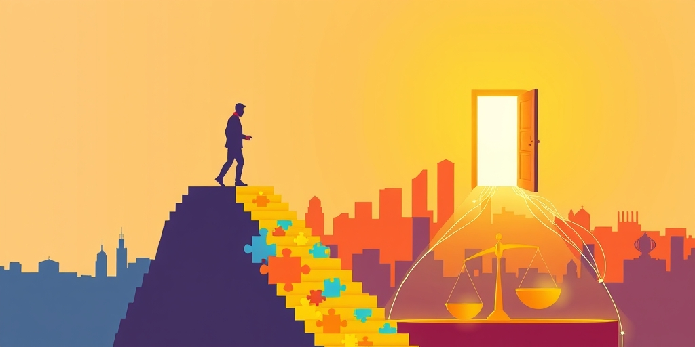
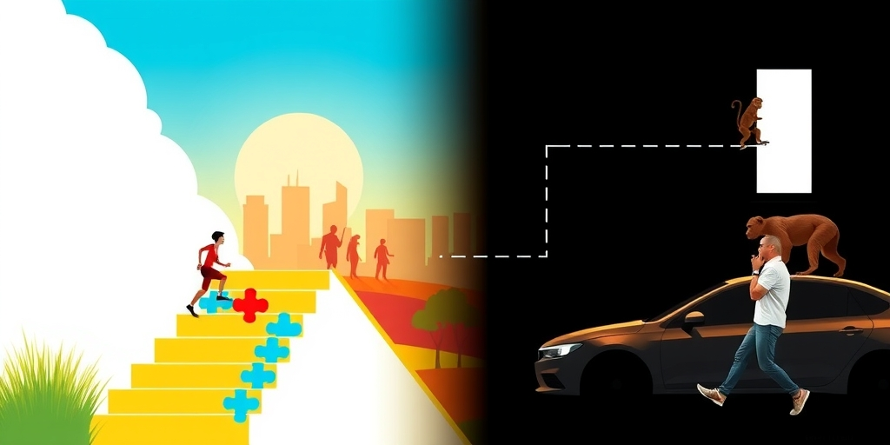
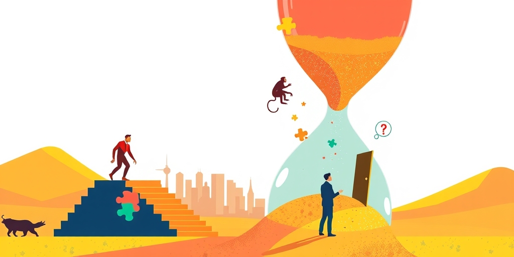

小汪老师的成长洞察 · 属于你的成长专栏
有人在西藏自驾路上看到猴子偷东西，提醒女司机，女司机问「然后呢？」等回头，猴子已经得手。这句「然后呢」不是疑问，是一种人格操作系统的特征信号——它代表了整整一类人对世界的处理方式：在任何行动之前，必须先完成认知闭环。问题是，现实不会等你闭环。
那个画面太生动了。前车顶棚行李箱弹开，一只猴子蹲在里面翻东西。后车的人摇下车窗喊：你车顶没关，东西被偷了。女司机回头，表情不是惊慌，是困惑。她问：然后呢？
等后车的人再回头看，猴子已经抱着战利品跳下车顶跑了。这个「然后呢」不是一句正常的追问。它是一整套信息处理流程的缩影。遇到提醒先反问，先质疑，先要求对方把话说完整。任何输入都必须经过一个延迟验证的流程——你告诉我A，我得先弄清楚A到B到C的完整链条，才能决定是否对A做出反应。
当事后出了问题，脱口而出的不是「我没来得及处理」，而是「你怎么不早说」。把延迟的代价转嫁给信息源。这不是恶意，是一种默认模式。网上很多人说自己最烦被回复「然后呢」，因为它把一段可以立即行动的信息交换，强行降级成了一堂需要一对一辅导的微型课。你本来只是路过喊了一嗓子，结果被拉进了一场答辩。

第一层是认知闭合需求。有些人无法在信息不全的情况下行动，必须等到心理图景完整了才能按下开关。但很多场景中的信息不是等来的，是行动本身会揭示的。你先去关车顶，关完了自然就看清猴子拿没拿东西。认知闭合需求在这里是一个悖论：你为了获得足够信息而延迟行动，但延迟行动恰恰让你失去了获取信息的机会。
第二层是控制感。被一个陌生人提醒「你的东西被偷了」，本质上是接受了一个短暂的权力落差——别人比你更早知道你的处境。对控制感高度敏感的人，下意识会用反问来拉平这个落差。「你说东西被偷了？让我来判断这件事的严重程度。」「然后呢」的潜台词是：别指挥我，把信息交给我，由我来决定要不要行动。这不是不信任信息本身，是不接受信息附带的行动指令。
第三层是信息时代的适应性过载。我们每天接收的建议、提醒、警告太多了，手机推送、同事提醒、社交媒体建议，绝大多数是噪音。很多人发展出了一种通用过滤机制：对所有外部输入默认延迟处理，等一等、看一看、再确认一下。这个机制在大多数场景下能帮你筛掉垃圾信息。但在少数时间敏感的场景下，它让你对猴子的手速毫无防备。

这个现象更深层的根源在于，现代社会把「即时决策」和「深思熟虑」对立起来了，好像快速反应就是不理性。但人类有两套决策系统。快系统靠直觉、本能、经验驱动，慢系统靠分析、推理、信息收集驱动。「然后呢」型人格的问题是，他们把慢系统设为了唯一合法路径。任何决策都必须走慢通道，快通道被长期压制、废弃不用了。
快通道的存在是有原因的。你的祖先在草原上看到草丛晃动，不需要先确认「然后呢？是狮子还是风？如果是狮子，它会从哪个方向来？」先跑再说。快通道的进化意义就是：有些信息的有效期是按秒计算的。猴子偷东西就是现代版的草丛晃动。你不需要掌握全部事实再行动，行动本身就是事实获取的方式。
再深一层，「然后呢」型人格的蔓延，可能跟我们这个时代「确定性过剩」有关。在信息稀缺的年代，信息本身就具有行动指令的效力——听到了就做，因为信息是稀缺资源。在信息爆炸的年代，信息的行动效力被稀释了。每一条信息都在跟另外一百条竞争你的注意力，你的默认策略变成了「先让所有信息排队，等我评估完再说」。你用管理信息噪音的策略去处理了紧急信号。这不是认知缺陷，是系统误判。

那个猴子偷东西的场景之所以好笑又发人深省，是因为它揭示了一个残酷的事实。现实本身是一个不需要对你负责的行动者。猴子不会等你的「然后呢」说完再决定偷与不偷。你的认知闭环是纯粹内在于你的事情，外部世界按照自己的时间线运行。
你在心里走完A到B到C的推理链条，这段时间里，猴子已经完成了发现目标、抓取物品、逃离现场的全过程。你的延迟不是中性的等待，它是实实在在的机会成本。每一次你说「然后呢」，都在支付一笔看不见的税。
有些人会说，那万一是假消息呢？万一那个提醒是误判呢？这个反驳本身就是在用慢系统的逻辑为慢系统辩护。快系统的存在恰恰是为了应对这种不确定性。先跑，跑错了顶多白跑一趟。先关车顶，关错了顶多白关一次。但如果不跑、不关，而威胁是真的，代价是猴子把你的东西全部搬走。
写给你的话
你上一次说出「然后呢」是什么时候？对方提醒你的事情，后来是不是真的发生了？你当时想的是「让我先判断一下」，还是「你凭什么指挥我」？这两种想法都会让你错过同一件事：猴子已经动手了。这种人格在职场里会让你永远慢半拍，在亲密关系里会让对方觉得自己的话从来不被你接住。不是因为你笨，是因为你太想把所有输入都先放进一个安检通道。但有些信息是活物，它们不会排队。
小汪老师的成长洞察 · 属于你的成长专栏